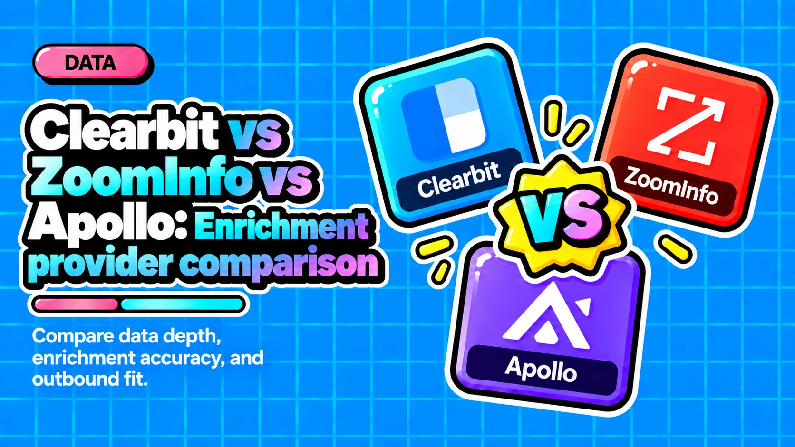

Clearbit vs ZoomInfo vs Apollo: Which Enrichment Provider Should Anchor Your Data Stack?

Direct answer: Clearbit, ZoomInfo, and Apollo are not direct competitors. Clearbit excels at real-time firmographic enrichment inside HubSpot. ZoomInfo leads on phone data and enterprise contact depth. Apollo offers transparent pricing and all-in-one convenience for email-led outbound. No single provider wins every dimension, so pragmatic teams stack all three in a waterfall.
- Clearbit no longer exists as a standalone product. It was rebranded as HubSpot Breeze Intelligence and its legacy free tools were sunset on April 30, 2025.
- ZoomInfo leads on phone accuracy (88% direct-dial connect rate in a 2026 benchmark) but starts at roughly $15,000 per year and rarely stays there.
- Apollo achieves a 94% email deliverability rate in benchmarks but G2 reviewers report 15 to 25% bounce rates in real outbound campaigns, so independent accuracy testing tells a more complicated story.
- A pragmatic waterfall stacks providers by data type: ZoomInfo for phone, Clearbit for firmographics inside HubSpot, and Apollo as a cost-efficient email source with fallbacks to People Data Labs or Cognism.
- Connecting your CRM to Apollo may allow Apollo to use that data to enrich its own database, a governance risk worth evaluating before integrating in regulated industries.
Questions this article answers
- What exactly are Clearbit, ZoomInfo, and Apollo?
- How do the three providers compare on database size and coverage?
- Which provider delivers the most accurate data?
- What does each provider actually cost?
- How do the CRM integrations compare across providers?
- Which enrichment provider is best for each use case, and how should they be layered in a waterfall?
- Plus 6 FAQs answered below
What exactly are Clearbit, ZoomInfo, and Apollo?
The three tools occupy different market tiers and serve different GTM motions. Understanding what each one actually is prevents costly mismatches between the tool and the job.
Clearbit no longer exists as a standalone product. HubSpot acquired it in late 2023 and rebranded it as Breeze Intelligence, a HubSpot-native enrichment layer covering real-time lead enrichment on form submission, IP-based visitor de-anonymization, company and contact data append, and automated lead scoring. All legacy free tools were sunset on April 30, 2025. There is no searchable prospecting database, no outbound tooling, and no integration path for Salesforce, Dynamics, or any CRM other than HubSpot.
ZoomInfo is the enterprise incumbent. It operates the largest proprietary B2B contact database in the market, built from web crawling, contributed email and calendar data, and third-party data partnerships. Its product suite spans SalesOS, MarketingOS, and TalentOS. Beyond raw contact data, ZoomInfo adds buyer intent signals (recognized as a Forrester Wave Leader in Q1 2025), conversation intelligence through its Chorus acquisition, and the GTM Context Graph intelligence layer. It is publicly traded on Nasdaq (ZI).
Apollo.io is an all-in-one sales platform that bundles a B2B contact database with multi-step email sequences, a built-in dialer, basic deal tracking, and CRM integrations on transparent, publicly listed per-seat pricing. Apollo acquired Pocus in March 2026 to fold signal-based revenue intelligence into its platform and is used by more than 500,000 companies.
How do the three providers compare on database size and coverage?
ZoomInfo claims the largest database by a significant margin, though all three providers have meaningful coverage gaps depending on region and company size.
ZoomInfo claims 321M+ professional profiles, 104M+ company profiles, 174M+ verified emails, and 70M+ direct-dial phone numbers as of 2026. Its GTM Studio queries 25+ additional vendors in parallel to fill gaps its own database misses. Coverage is concentrated in North America. SMB, startup, and APAC or LATAM contacts are measurably sparser than enterprise records.
Apollo claims 275M contacts and 73 million companies. The 275M headline drops materially when filtered for verified emails. Third-party reviewers note a meaningful share of records carries at least one outdated field, and single-source enrichment limits coverage to 40 to 60% for any given list. Apollo did roll out its own waterfall enrichment feature in December 2025, which begins to address this gap.
Clearbit/Breeze Intelligence draws from 250+ public and private sources and delivers 100+ data points per record, including firmographics, technographics, job titles, and locations. Its historical strength is company-level data. Individual contact coverage, especially for SMB and mid-market companies, is thinner than both ZoomInfo and Apollo. Clearbit has never provided phone number data.
| Provider | Contacts | Companies | Phone Data |
|---|---|---|---|
| ZoomInfo | 321M+ | 104M+ | Yes (70M+ direct dials) |
| Apollo | 275M | 73M | Yes (lower accuracy) |
| Clearbit | 250+ sources | 100+ data points | No |
Which provider delivers the most accurate data?
Accuracy splits by data type: ZoomInfo leads on phone, Clearbit leads on real-time firmographic enrichment, and Apollo leads on email deliverability rate at scale but underperforms in real production campaigns.
ZoomInfo achieved an 88% direct-dial connect rate in a 2026 benchmark test by Mindcase and roughly 85% verified email accuracy in Cleanlist's 2026 three-way comparison. Data quality is strongest for VP-level and above contacts at US companies with 500+ employees. Multiple Capterra reviewers report 5 to 10% of contacts are no longer at the listed company, and international accuracy in APAC and LATAM is noticeably weaker.
Clearbit/Breeze Intelligence leads on real-time firmographic enrichment. Its form-shortening feature fills fields from an email address alone without consuming credits and has driven 50%+ conversion lifts for customers like Gong and Mention. The weakness is depth: no phone data, and some buyers report duplicate records.
Apollo achieved a 94% email deliverability rate in a 2026 benchmark by Mindcase, but independent testing tells a more complicated story:
- Cleanlist's 2026 test and G2 reviewers place real-world email accuracy in the 65 to 80% range, well below the roughly 91% Apollo markets.
- G2 reviewers consistently report bounce rates of 15 to 25% in production outbound campaigns.
- Phone number accuracy is approximately 55% per LaGrowthMachine analysis.
Reps working European or Asian accounts should expect materially more manual cleanup.
What does each provider actually cost?
Apollo is the most transparent on pricing. ZoomInfo requires a sales conversation and typically costs far more than its entry point suggests. Clearbit requires an active HubSpot subscription as a baseline.
ZoomInfo does not publish pricing publicly. Based on sales rep disclosures on Reddit and Vendr spend tracking, the Professional tier starts at roughly $14,995 to $15,000 per year with a 3-seat minimum. Most teams pay $30,000 to $60,000 per year once adding Enrich, Global Data, and extra credits. Median Vendr-tracked spend is $31,875 per year.
Apollo is fully transparent. Pricing billed annually per seat:
- Free: 900 credits per year
- Basic: $49 per user per month
- Professional: $79 per user per month (unlimited credits with fair use, dialer, call recording)
- Organization: $119 per user per month
A full contact enrichment with phone data consumes up to 9 credits per record.
Clearbit/Breeze Intelligence starts at approximately $45 per month for 100 enrichment credits on top of a required paid HubSpot subscription (from $20 per month), making the realistic all-in minimum roughly $65 per month. Credits expire monthly with no rollover. Scaled usage reaches $900 for 100k credits or $4,500 for 500k credits, in addition to HubSpot subscription fees.
How do the CRM integrations compare across providers?
ZoomInfo integrates with the broadest range of CRMs. Clearbit works exclusively inside HubSpot. Apollo covers Salesforce and HubSpot natively but gates advanced API access behind higher tiers.
ZoomInfo integrates natively with 120+ CRM and MAP tools, including Salesforce, HubSpot, and Microsoft Dynamics, with real-time automatic enrichment in Salesforce via AppExchange and multiple enrichment modes (Instant, Scheduled, and Enrich Premium). Full integration setup typically requires RevOps or sales engineering support.
Apollo integrates natively with Salesforce and HubSpot but has no native connection to Pipedrive, Attio, or Copper on lower plans. Webhook and HTTP API access for custom automations are gated behind higher tiers. A notable data governance consideration: connecting your CRM to Apollo may allow Apollo to use that data to enrich its own database, a concern for regulated industries.
Clearbit/Breeze Intelligence works exclusively inside HubSpot. Teams on Salesforce, Dynamics, or any other CRM cannot access it. Between October 2025 and February 2026, two API endpoints were deprecated without much notice, increasing platform risk for any team that has not fully committed to HubSpot.
Which enrichment provider is best for each use case, and how should they be layered in a waterfall?
No single provider wins on every dimension. The right design stacks them in sequence by data type, with each provider covering the gaps the previous one leaves.
Clearbit/Breeze Intelligence is the right fit for HubSpot-native marketing teams focused on inbound enrichment, form shortening, and IP-based visitor identification. In a waterfall design, it serves as a firmographic fallback layer for HubSpot shops, strong on company-level attributes like tech stack, industry, and employee count. It cannot contribute phone data and cannot operate outside HubSpot.
ZoomInfo is built for enterprise GTM teams running outbound at scale who need the largest North American B2B dataset, direct-dial phone coverage, and intent signals. In a waterfall design, ZoomInfo typically serves as the primary or first-pass enrichment layer for phone data and enterprise contact depth, with its GTM Studio querying 25+ additional vendors to fill remaining gaps.
Apollo is best for startups, SMBs, and self-serve sales teams running email-led outbound who want transparent pricing and a workflow that goes from list-building to first touch in one tool. In a waterfall design, sophisticated teams commonly use Apollo as a cost-efficient primary source for email, with fallbacks to People Data Labs, Clearbit, and Hunter for fields Apollo misses, and ZoomInfo or Cognism for phone data where accuracy is critical.
Recommended waterfall sequence by data type:
- Firmographics (HubSpot shops): Clearbit/Breeze Intelligence as primary, ZoomInfo as fallback
- Email (SMB and startup motions): Apollo as primary, People Data Labs or Hunter as fallback
- Phone (enterprise outbound): ZoomInfo as primary, Cognism as fallback
- Intent signals: ZoomInfo as primary source
If you are designing a multi-vendor enrichment waterfall and want a defensible architecture that avoids redundant spend, the services at davidbervic.com cover GTM engineering and RevOps system design for exactly this kind of decision.
Frequently asked questions
Is Clearbit still available as a standalone product?
No. HubSpot acquired Clearbit in late 2023 and rebranded it as Breeze Intelligence, a HubSpot-native enrichment layer. All legacy free tools, including the Connect Chrome extension and TAM Calculator, were sunset on April 30, 2025. There is no standalone access or integration path for non-HubSpot CRMs.
How much does ZoomInfo actually cost for a small team?
ZoomInfo does not publish pricing. Based on Vendr spend tracking and sales rep disclosures, the Professional tier starts at roughly $14,995 to $15,000 per year with a 3-seat minimum. Most teams end up paying $30,000 to $60,000 per year once they add Enrich, Global Data, and extra credits.
Does Apollo's email accuracy hold up in real campaigns?
Apollo benchmarks at 94% email deliverability in controlled tests, but independent analysis tells a different story. Cleanlist's 2026 three-way test and G2 reviewer data place real-world email accuracy in the 65 to 80% range, and G2 reviewers consistently report bounce rates of 15 to 25% in production outbound campaigns.
Can I use Apollo with my Salesforce CRM without governance concerns?
Apollo integrates natively with Salesforce, but a key governance consideration applies: connecting your CRM to Apollo may allow Apollo to use that data to enrich its own database. Teams in regulated industries or those with strict data handling requirements should review Apollo's terms carefully before integrating.
Where does ZoomInfo fall short on data coverage?
ZoomInfo's database is strongest for VP-level and above contacts at US companies with 500 or more employees. Coverage drops measurably in APAC and LATAM, and SMB and startup contacts are sparser than enterprise records. Multiple Capterra reviewers report 5 to 10% of contacts are no longer at the listed company.
What is the most cost-effective waterfall design for a startup running email outbound?
For startups running email-led outbound, the most cost-effective waterfall typically uses Apollo as the primary email source, with fallbacks to People Data Labs or Hunter for fields Apollo misses. ZoomInfo or Cognism can be added specifically for phone data if calling is part of the motion, avoiding the full ZoomInfo contract cost.
Sources
Designing a waterfall enrichment stack for your own CRM?
Contact →